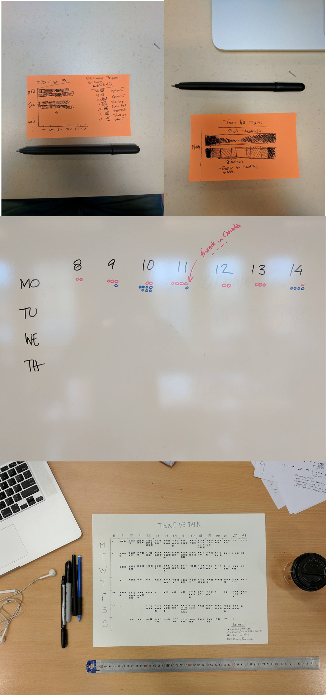

Assignment
Collect data from your real life and create a hand drawn data visualization.
My Idea
As a 21 year old living in this digital age I find myself checking in on my virtual life more than my real life quite often. I thought it would be interesting to attempt to track the amount of words I actually spoke to people vs how many words I send to people via digital instant messages. I settled on 2 sets of data for each instance I wanted to track. I decided that “Talk” would include face-to-face conversation and phone calls/Facetimes while “Text” would include instant messages over any social media network and tweets or comments left by me on social media.
The Project
The task of collecting my data proved to be much harder than I had initially anticipated. For written data it was much easier since I had a log of all my conversations with time stamps at the end of each day that I could copy and paste into Microsoft word to get the total word count. For spoken words I started by trying to record my conversations with my phone, this was extremely hard to get any useful numbers from I quickly realized. I switched to keeping track of when my conversations started and wrote down the time it ended after I was done then used an average of words per minute to calculate approximentaly how many words had been spoken.
Design Process
After a week of data collection I got to work on my visualization, I looked to the book "Dear Data" (super cool book, check it out if you have not already) for inspiration and found a couple of ideas that I thought could be cool to adapt for my own purposes. My first idea for the visualization was a stacked horizontal bar graph with the X-axis representing the hour of the day and the Y-axis representing the days of the week, this seemed too bland to me though because it felt like something that could be easily recreated in Microsoft Excel (and we all know how boring that can be). I then started toying with the idea of trying to make my final result look like a calendar for a month, although in this case it was only one week. The visual representation of a calendar intrigued me because of it's structure. Calendars are easy to read and follow and I thought the viewer could look and compare data in interesting ways by looking at either axis first. I used shapes to display my data set because I liked the idea of having the entire piece be monochrome. In a rough draft I used colours to try and display the differences in data but this seemed too unclear to me overall, the shapes added a certain stucture that colour could not in this case. Each shape on the drawing represents approx. 100 words spoken by me, some hours I spoke as much as 1200 words while sometimes hours would go by and I would not speak at all.

My final result ended up being put on display at LiU’s annual Design Talks conference where I got to talk about my data visualization and hear feedback from others who all attended the conference! There were actually a couple of neat call outs in my data as well, I noticed a spike in texts around 6PM and 11PM during the week, most likely because this lines up with my friends lunch time and the end of work back in Toronto. Through this assignment I learned new ways about trying to conceptualize data. Being forced to use a data set personal to me made me think a lot about how this project could be made so it made people think about their own lives and how they might better relate to my data.
 < Back
< Back